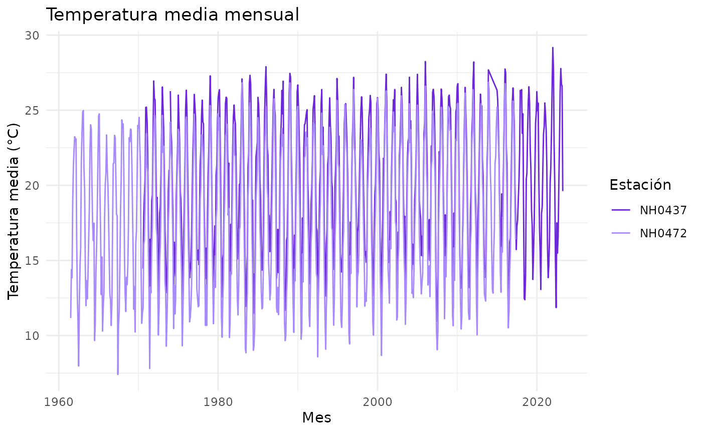

Introducción
lloRando permite leer, resumir y graficar datos meteorológicos del INTA. En esta guía vamos a recorrer las tres funciones principales con ejemplos.
Los datos
El paquete incluye el dataset estaciones, con datos
diarios de cinco estaciones.
dim(estaciones)
#> [1] 95681 35
head(estaciones[c("id", "fecha", "temperatura_abrigo_150cm")])
#> id fecha temperatura_abrigo_150cm
#> 1 NH0046 1973-01-01 27.00
#> 2 NH0046 1973-01-02 27.20
#> 3 NH0046 1973-01-03 25.15
#> 4 NH0046 1973-01-04 26.45
#> 5 NH0046 1973-01-05 26.05
#> 6 NH0046 1973-01-06 20.45Resumir la temperatura
tabla_resumen_temperatura() calcula el promedio y el
desvío
tabla_resumen_temperatura(estaciones)
#> # A tibble: 10 × 3
#> id estadistico valor
#> <chr> <chr> <dbl>
#> 1 NH0046 media 17.3
#> 2 NH0046 desvio 5.90
#> 3 NH0098 media 18.6
#> 4 NH0098 desvio 5.98
#> 5 NH0437 media 20.2
#> 6 NH0437 desvio 5.77
#> 7 NH0472 media 18.0
#> 8 NH0472 desvio 5.94
#> 9 NH0910 media 17.7
#> 10 NH0910 desvio 6.12También podemos filtrar algunas estaciones antes de resumir:
seleccion <- estaciones[estaciones$id %in% c("NH0437", "NH0472"), ]
tabla_resumen_temperatura(seleccion)
#> # A tibble: 4 × 3
#> id estadistico valor
#> <chr> <chr> <dbl>
#> 1 NH0437 media 20.2
#> 2 NH0437 desvio 5.77
#> 3 NH0472 media 18.0
#> 4 NH0472 desvio 5.94Graficar la temperatura mensual
grafico_temperatura_mensual() muestra el promedio de
cada mes del año. Podemos cambiar los colores y el título:
seleccion <- estaciones[estaciones$id %in% c("NH0437", "NH0472"), ]
grafico_temperatura_mensual(
seleccion,
colores = c(NH0437 = "#6d28d9", NH0472 = "#a78bfa"),
titulo = "Temperatura media mensual"
)
#> Warning: Removed 1 row containing missing values or values outside the scale range
#> (`geom_line()`).